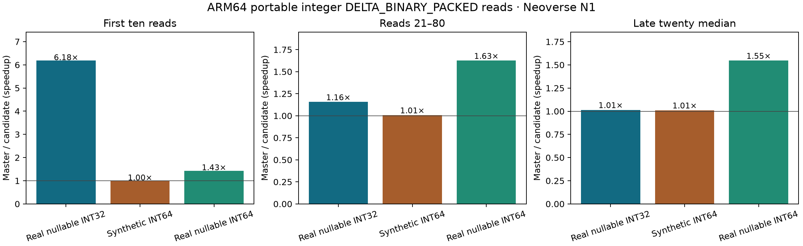

ARM portable integer delta read expansion
September 29, 2026 · Neoverse N1 · published Plank public API · one isolated CPU · 100 ordered ColdStart iterations per case, zero warmups. Exact candidate 2209d94 against master 60c4749. Candidate passed 1,095 ARM64 Release tests.

Before and after, each iteration
Each panel is one benchmark: master (blue) and the measured PR revision (orange), in run order. Time per iteration uses a logarithmic axis so first-use and later reads remain visible. Individual charts also show iterations 21–100 on a linear axis.

Individual charts: Real nullable INT32 · Synthetic INT64 · Real nullable INT64


| Case | First ten total, master → candidate | Middle sixty total | Late twenty median |
|---|---|---|---|
| Real nullable INT32 | 1847.0 → 298.7 ms | 1804.9 → 1560.8 ms | 27.21 → 26.82 ms |
| Synthetic INT64 | 299.9 → 301.3 ms | 1461.0 → 1449.7 ms | 19.55 → 19.35 ms |
| Real nullable INT64 | 473.3 → 330.2 ms | 2665.3 → 1639.7 ms | 39.27 → 25.40 ms |
Synthetic INT64 is a regression control for the narrow-width dispatch. It remained near parity in all three windows. Download all ordered samples (JSON).